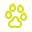
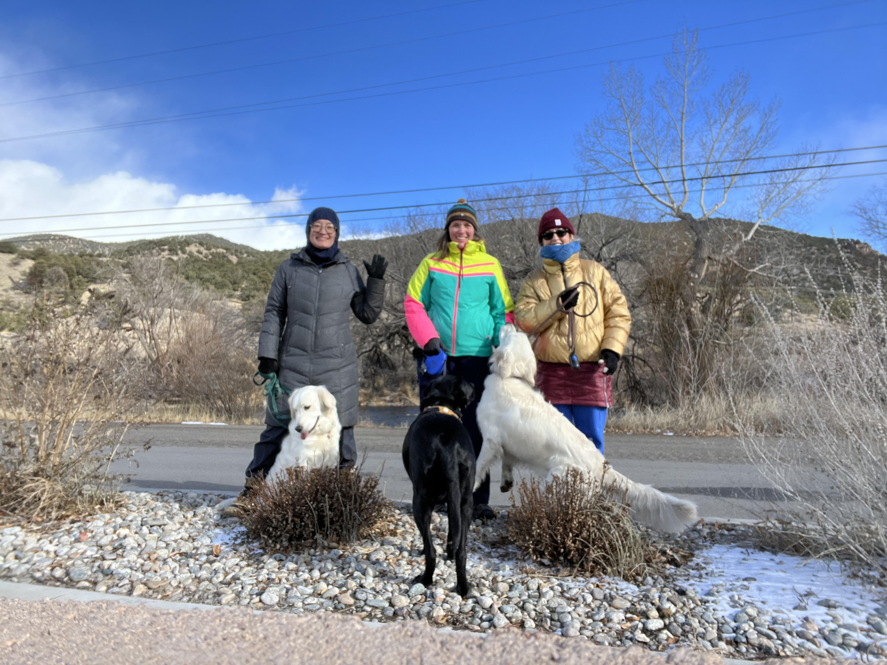

<!DOCTYPE html>
<html>
<head>
	
	<title>Walk the Dog</title>

	<meta charset="utf-8" />
	<meta name="viewport" content="width=device-width, initial-scale=1.0">
	
	
	<!-- Load Leaflet-->
    <link rel="stylesheet" href="css/stylesheet.css"/>
	<!-- <link rel="stylesheet" href="https://unpkg.com/leaflet@1.7.1/dist/leaflet.css"/> -->
	
	<!-- add a little icon to the tool bar -->
	<link rel="shortcut icon" href="icons/pawicon.png">
	
	<!-- <script src="https://unpkg.com/leaflet@1.7.1/dist/leaflet.js"></script> -->
    <script src="leaflet171library/leaflet171.js"></script>
	
	
	<!-- Load Leaflet.timeline-->
	<!-- <script src="https://skeate.dev/Leaflet.timeline/examples/leaflet.timeline.js"></script> -->
	<script src="plugins/leaflettimeline.js"></script>

	<!-- Load moment.js-->
	<!-- <script src="https://momentjs.com/downloads/moment.js"></script> -->
	<script src="plugins/moment.js"></script>	

	
	<!-- load my gps data -->
	<!-- <script src="dogwalkpoints.js"></script> -->
	<!-- no actually I don't need to load it here bc it's loaded seperatly with the timeline, and with the zoom. -->
	
	<!-- here is a source reference for the dag paw icon.  cute! -->
	<!-- <a target="_blank" href="https://icons8.com/icon/19439/dog-paw">Dog Paw</a> icon by <a target="_blank" href="https://icons8.com">Icons8</a> -->


	<style>
			html, body {
			height: 100%;
			margin: 10px;
			<!-- white space all around map margin from 0 to 10 px. -->
		}
		#map {
			width: 100%; height: 100%;
		}
		.info {padding: 6px 8px 6px; font: 24px/1px Lato, Helvetica, sans-serif; background: white; 
			background: rgba(255,255,255,0.4); box-shadow: 0 0 15px rgba(0,0,0,0.4); border-radius: 2px; } 
		
		.info h4 {margin: 0 0 5px; color: #777;}
		
		.leaflet-bottom.leaflet-left {
			width: 90%;
		}
		.leaflet-control-container.leaflet-timeline-controls {
			box-sizing: border-box;
			width: 100em;
			height: 30px;
			margin: 10px;
			margin-bottom: 15px;
		}
		.leaflet-control.leaflet-timeline-control.button-container button {
		  position: relative;
		  width: 30%;
		  height: 30px;
		}
		.leaflet-control.leaflet-timeline-control {
		  width: 50%;
		  box-sizing: border-box;
		  margin: 2%;
		  margin-bottom: 20px;
		  text-align: center;
		}
		.leaflet-control.leaflet-timeline-control input[type="range"] {
		  width: 80%;
		}
		
		<!-- careful do not disturb spacing between the .info tags.  I don't know why, but that breaks the boxes. --> 
		<!-- reduce kearning around title, and upped font size. changed font from 14px/16px to 24px/1px (fontsize/kearning).--> 
		<!-- changed the font to Lato, bc I like Lato. also changed the last # in the rgba tag that controld opacity.   --> 
		
	</style>


</head>
<body>

<div id='map'></div>

	<script type="text/javascript" src="dogwalkpoints.js"></script>

	<script type="text/javascript">

	var map = L.map('map').setView([38.5250, -105.9800], 14.49);
	
	var imagery = L.tileLayer('https://server.arcgisonline.com/ArcGIS/rest/services/World_Imagery/MapServer/tile/{z}/{y}/{x}', {
	attribution: 'Tiles &copy; Esri &mdash; Source: Esri, i-cubed, USDA, USGS, AEX, GeoEye, Getmapping, Aerogrid, IGN, IGP, UPR-EGP, and the GIS User Community'
	}).addTo(map);
	
	<!-- adding a bit of code to define the "bounds" as the extents of the GeoJson which I've called "zoom", and then asking the map to zoom to those bounds. -->
	<!-- loading the geoJSON to the map (but not adding it) so that I can have the map zoom to the exrtents of the layer no matter the screen size.  -->
	var zoom = L.geoJson(dogwalkpoints, {
	});
		map.fitBounds(zoom.getBounds());
	
	// Adds title

	var info = L.control();

	info.onAdd = function (map) {
		this._div = L.DomUtil.create('div', 'info');
		this.update();
		return this._div;
	};

	info.update = function (props) {
		this._div.innerHTML = '<h2>Walk The Dog!!</h2>';
	};

	info.addTo(map);
	
	<!-- trying to change the circle icon to a little dog paw.  sould be able to do it with the l.marker option l.icon.   -->
	<!-- I'll put the icon variable up here. then try to call it in the timeline. -->
	var pawicon = L.icon({iconUrl: 'icons\pawicon.png'}
		); 
	
	<!-- adding a picture to my map for fun! -->

	var info = L.control();

	info.onAdd = function (map) {
		this._div = L.DomUtil.create('div', 'info');
		this.update();
		return this._div;
	};

	info.update = function (props) {
		this._div.innerHTML = ' <a href="images/dogwalkcrew.jpg" alt="" width= 500px; height= "auto">WOOF</a>'; 
		<!-- '; -->
	};

	info.addTo(map);
	<!-- end of picture adding code -->
	
	//Leaflet.timeline section
	  
 
	
	var getInterval = function(feature) {
		return {
				start: moment(new Date(feature.properties.DateTimeS)),
				end: moment(new Date(feature.properties.DateTimeS))+3000,
			};
		};
	var timelineControl = L.timelineSliderControl({
			formatOutput: function(date){
				return moment(date).format("MM-DD-YYYY HH:mm:ss");
			},
		});
		
		<!-- does not work =( -->
		<!-- var timeline = L.timeline(dogwalkpoints, { -->
			<!-- getInterval: getInterval, -->
			<!-- pointToLayer: function(point, latlng) { -->
                        <!-- return L.Marker([latlng], {icon: pawicon}); -->
			<!-- }, -->
		<!-- }); -->
			
		
	var timeline = L.timeline(dogwalkpoints,{
			width: '100%',
			getInterval: getInterval,
			pointToLayer: function(point, latlng) {
                        return L.circleMarker(latlng).setStyle(
						{color:'yellow',
						radius:7, fillOpacity: 0.5}
						);},
		});
		
	timeline.addTo(map);
	timelineControl.addTo(map);
	timelineControl.addTimelines(timeline);
		
	

	//Layer Selector section (more meaningful if you have more layers)

	<!-- var baseLayers = { -->
	<!-- "Imagery": imagery, -->
	
	<!-- }; -->

	<!-- var overlays = { -->
	<!-- }; -->

	<!-- L.control.layers(baseLayers, overlays, {collapsed: false}).addTo(map); -->
	
	L.control.scale()
	<!-- ended up editing the scale bar in the .css code.  imposibble here. -->
	.addTo(map);


</script>


</body>
</html>
